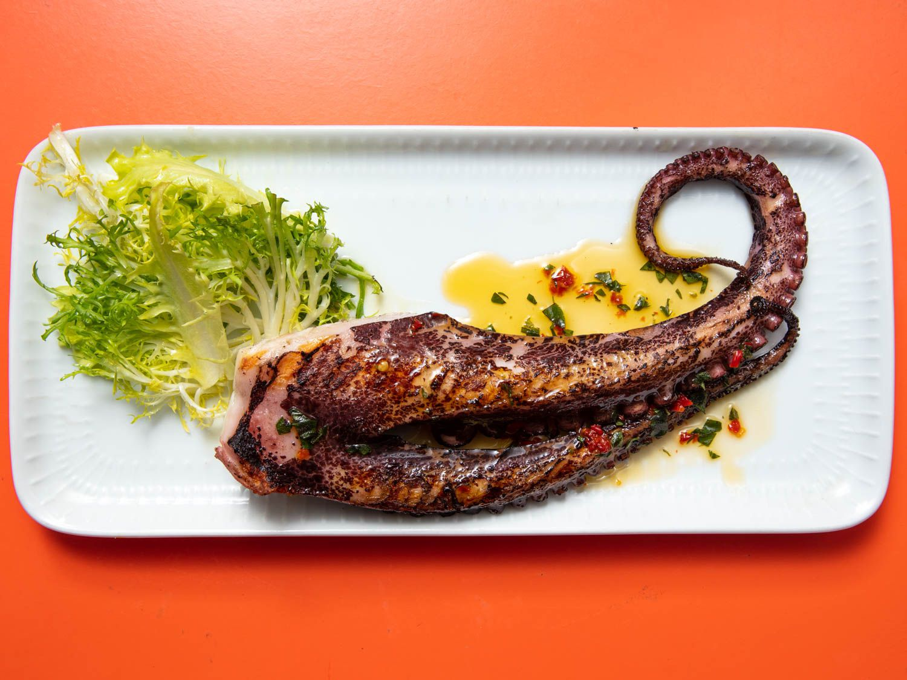

Grilled Octopus

Ingredients
Easy grilled octopus recipe.
Great with a glass of wine on a summer evening.
What you'll need:
- 2 pounds octopus
- Olive oil
- 2 garlic cloves
- Juice of 1 lemon
- 1/2 tsp dried oregano
- 2 tsp chopped fresh parsley
- Salt and pepper to season
Instructions
- Place octopus in a pot and cover with enough water. Bring to a boil. Boil for 40 minutes.
- Remove octopus from hot water, rinse and place in a bowl. Drizzle with olive oil and chopped garlic. Let cool at room temperature for 30 minutes to 1 hour.
- Preheat grill to a medium-high heat.
- Slice octopus tentacles and grill for 3-4 minutes per side, until charred.
- Drizzle with olive oil and add lemon juice. Season with salt and pepper.
- Add oregana and parsley to taste.